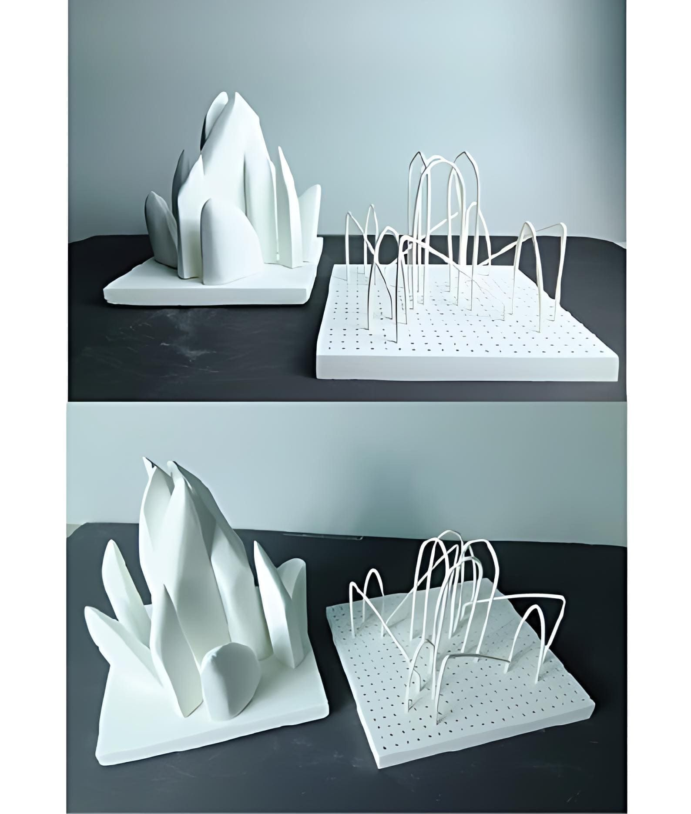

城市之花
立體模型／ABS／PU／批土
製作與思考
「城市之花」以城市建築的輪廓作為發想，嘗試將理性、規律的城市結構，轉化為如花朵般向外展開的立體形式。作品希望呈現出城市中層層堆疊的建築量體，彷彿在空間中交織、生長，最終形成一朵象徵城市生命力的抽象花型。
造型上，左側以較為厚實的量體表現建築群的堆疊感，而右側則透過線性結構延伸，營造出城市輪廓在空間中縈繞、蔓延的視覺效果。線立體部分在製作上具有高度挑戰性，需反覆加熱並手動彎折 ABS 條，使其在柔軟與結構穩定之間取得平衡；過熱容易造成材料融化變形，不足的溫度則會使線材在彎折時斷裂，製作過程需要極高的專注與控制。
透過「城市之花」，我希望將原本冷硬、規則的城市意象，轉化為具有流動感與生命感的立體作品，讓建築不再只是結構，而成為在空間中綻放的形態。